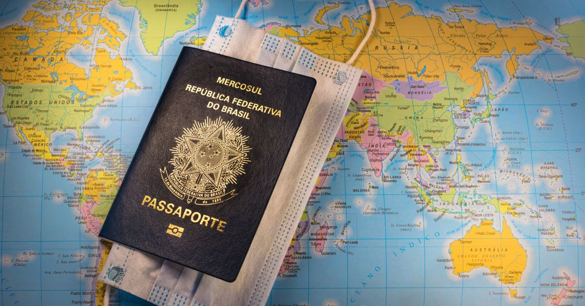
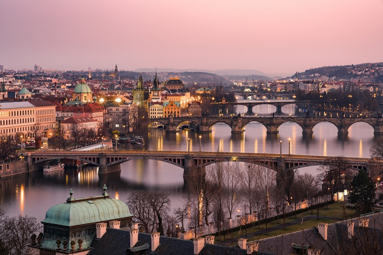

No ano de 2021 decidi tomar uma decisão ousada, investi minhas economias na compra de um carro usado. A ideia inicial era restaura-lo e tornar meu carro de uso cotidiano, no entanto depois de muita reflexão percebi que seria muito dificil manter esse veiculo, agora o plano é terminar a restauração que eu diria estar 90% completa e vende-lo. Como podem observar abaixo a primeira foto foi como eu encontrei o carro e a segunda é como ele está hoje.


Em outubro de 2022 recebi a notícia de que minha amorada iria fazer um intercâmbio de 6 meses fora do páis, minha primeira reação foi de desespero ja que iria ficar tanto tempo sem ve-la. Após amadurecer a ideia, eu juntamente com os pais dela decidimos fazer uma surpresa... passar o natal e a virada de ano em Praga onde será o intercambio dela. A cada mês que passa a ansiedade aumenta já que será minha primeira vez fora do páis.
 